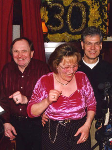

|
SCHOPPENSTUBE - IN MEMORIAN WERNER GUHL
Peter Goedel | Deutschland 2007 | 30 Min.
Material: Mini DV
Format: DVD
Originalsprache: Deutsch
Kamera: Klaus Lautenbacher
Schnitt: Agape Dorstewitz
Ton: Zoltan Ravasz
Mit Gertrud Guhl, Werner Guhl und vielen Gästen
Produktion: Peter Goedel
www.goedelfilm.de
Weltpremiere
Der Film erinnert an den legendären Musiker der "Fraunhofer Schoppenstube" Werner Guhl, einer Kultfigur des Münchner Kneipenlebens. Mit einem schier unerschöpflichen Liedrepertoire, seien es Schlager, Hans-Albers-Nummern oder Operetten- und Wiener Lieder, sorgt Werner ab Mitternacht mit Akkordeon oder Hammondorgel für Stimmung. Eine besonders liebenswerte Kneipe, die durch Werners Musik und Gertis unvergleichliche Art, mit den Gästen umzugehen, zum Szenelokal für die Münchner Nachtschärmer geworden ist. Ob jung oder alt, reich oder arm, alle versammeln sich hier in der gemeinsamen Feier der nächtlichen Stunden. Eine soziale Utopie auf kleinstem Raum.
Peter Goedel, geb. 1945 in Torgau/Elbe. Studium der Literatur- und Theaterwissenschaften, der Kunstgeschichte und Philosophie in Köln und München. Seit 1972 Regie-Assistenz bei Film- und Fernsehproduktionen. Ab 1974 eigene Filme fürs Fernsehen. Freier Mitarbeiter vor allem beim WDR, HR und BR, Kultur- und Filmredaktionen. Diverse Filme vorwiegend auf dem dokumentarischen Gebiet, daneben Radiofeatures und Hörspiele. Seit 1978 eigene Filmproduktion. 1980 erste Kinoarbeit "Talentprobe". Bundesfilmpreis 1988 für "Das Treibhaus" (nach dem gleichnamigen Roman von Wolfgang Koeppen).
Filme (Auswahl): Schoppenstube 2007 | Ich wurde eine Romanfigur – Wolfgang Koeppen 1906 – 1996 (DVD) 2006 | An der Straße von Gibraltar (TV) 2003 | Kindheit in Marokko 1999 | Tanger - Legende einer Stadt 1997 | Die Bleistift-Dynastie (TV) 1995 | Peter Przygodda, Schnittmeister (TV) 1993 | Trip nach Tunis (Fernsehspiel) 1992/93 | Ortelsburg – Szczynto 1990 | Das Treibhaus 1987 | Hinter den Elbbrücken 1986 | Talentprobe 1981 | Alois Gugutzer, Filmvorführer 1978
zurück
|